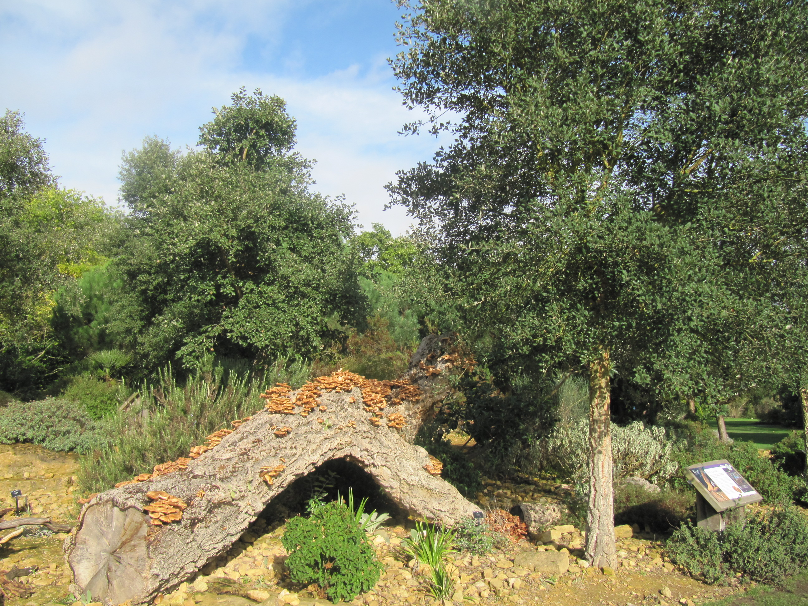

The boy approaches the enormous tree. The tree is covered in mushrooms, and the tree trunk is hollowed out. The boy is intrigued:
He walks torwards the biggest mushroom and inspects it.
He pokes his head in the hollow trunk.

From Flickr, "Fungi on a Fallen Tree Trunk" Leonorda Enking, 2013. source
Start over